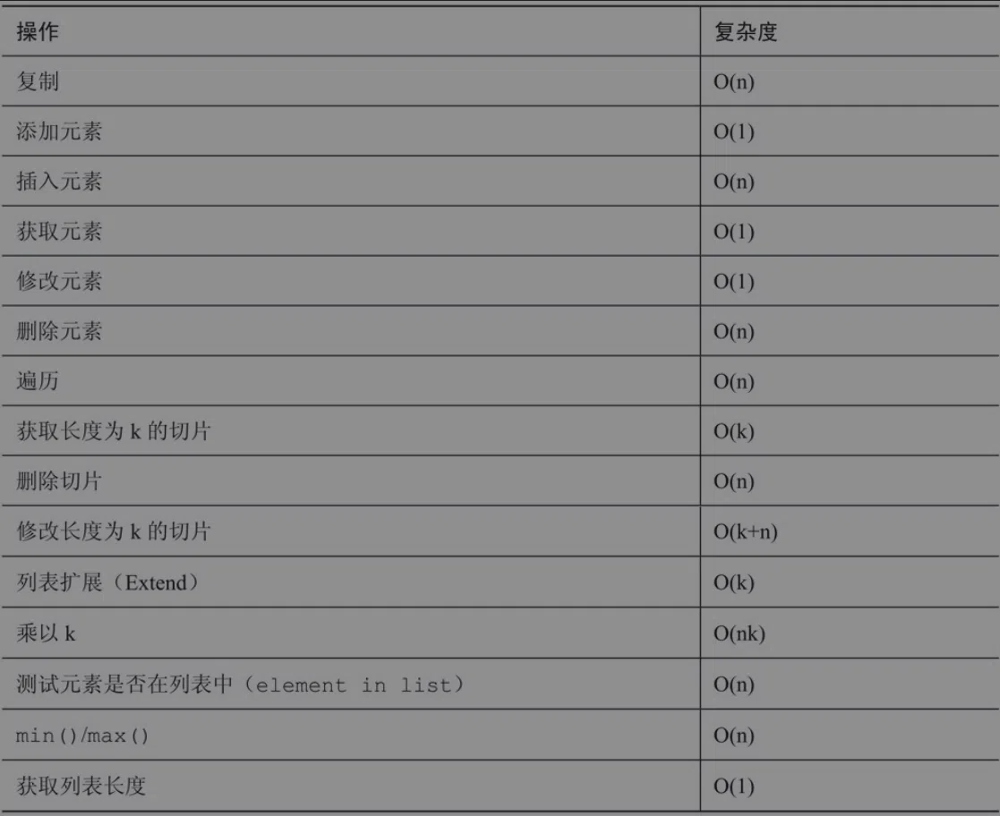

字符串与字节
Python3中只有一种能够保存文本信息的数据类型，就是str(string，字符串)。它是不可变的序列，保存的Unicode码位(code point)。
字符串可以保存的数据类型有非常明确的限制，就是Unicode文本。
bytes以及可变的bytearray与str不同，只能用字节作为序列值，即0<=x<256范围内的整数。
1 | bytes([102,111,111]) |
对于bytes和bytearray，在转换为另一种序列类型（例如list或tuple）时可以显示出其本来面目：
1 | list(b'foo bar') |
从Python3.0开始，所有没有前缀的字符串都是Unicode。因此，所有用单引号（’）、双引号（”）或成组的3个引号（单引号或双引号）包围且没有前缀的值都表示str数据类型：
1 | type("some string") |
字节也被单引号、双引号或三引号包围，但必须有一个b或B前缀：
1 | type(b"some bytes") |
Python字符串是不可变的。字节序列也是如此。bytearray是bytes的可变版本，不存在这样的问题。字节数组可以通过元素赋值来进行原处修改（无需创建新对象），其大小也可以像列表一样动态地变化（利用append、pop、inseer等方法）。
字符串拼接
用str.join()方法。它接受可迭代的字符串作为参数，返回合并后的字符串。
1 | ','.join(['some','one','like','you','forever']) |
因为join()方法速度更快（对于大型列表来说更是如此），并不意味着在所有需要拼接两个字符串的情况下都应该使用这一方法。虽然这是一种广为认可的做法，但并不会提高代码的可读性。可读性是很重要的！在某些情况下，join()的性能可能还不如利用加法的普通拼接。
集合类型
列表和元组
列表是动态的，其大小可以改变；而元组是不可变的，一旦创建就不能修改。
tuple是不可变的（immutable），因此也是可哈希的（hashable）
从细节上来看，Python中的列表是由对其他对象的引用组成的的连续数组。指向这个数组的指针及其长度被保存在一个列表头结构中。这意味着，每次添加或删除一个元素时，由引用组成的数组需要改变大小（重新分配）。幸运的是，Python在创建这些数组时采用了指数过分配（exponential over-allocation），所以并不是每次操作都需要改变数组大小。这也是添加或取出元素的平摊复杂度较低的原因。不幸的是，在普通链表中“代价很小”的其他一些操作在Python中的计算复杂度却相对较高：
- 利用
list.insert方法在任意位置插入一个元素——复杂度为O(n)。 - 利用
list.delete或del删除一个元素——复杂度为O(n)。

列表推导
1 | evens = [] |
这种写法可能适用于C语言，但在Python中的实际运行速度很慢，原因如下。
- 解释器在每次循环中都需要判断序列中的哪一部分需要修改。
- 需要用一个计数器来跟踪需要处理的元素。
- 由于
append()是一个列表方法，所以每次遍历时还需要额外执行一个查询函数。
列表推导正是解决这个问题的正确方法。它使用编排好的功能对上述语法的一部分做了自动化处理：
1 | [i for i in range(10) if i % 2 == 0] |
这种写法除了更加高效之外，也更加简短，涉及的语法元素也更少。在大型程序中，这意味着更少的错误，代码也更容易阅读和理解。
其他习语
Python习语的另一个典型例子是使用enumerate（枚举）。在循环中使用序列时，这个内置函数可以很方便地获取其索引。以下面这段代码为例：
1 | for element in ['one','two','three']: |
它可以替换为下面这段更短的代码：
1 | for i, element in enumerate(['one','two','three']): |
序列解包（sequence unpacking）
这种方法并不限于列表和元组，而是适用于任意序列类型（甚至包括字符串和字节序列）。只要赋值运算符左边的变量数目与序列中的元素数目相等，你都可以用这种方法将元素序列解包到另一组变量中：
1 | first, second, third = "holy", "chan", 100 |
解包还可以利用带星号的表达式获取单个变量中的多个元素，只要它的解释没有歧义即可。还可以对嵌套序列进行解包。特别是在遍历由序列构成的复杂数据结构时，这种方法非常实用。下面是一些更复杂的解包示例
1 | # 带星号的表达式可以获取序列的剩余部分 |
字典
字典是Python中最通用的数据结构之一。dict可以将一组唯一键映射到对应的值，如下所示：
1 | { |
可以用和前面列表推导类似的推导来创建一个新的字典。这里有一个非常简单的例子如下所示：
1 | squares = {number: number ** 2 for number in range(10)} |
在许多情况下，字典推导要更加高效、更加简短、更加整洁。对于更复杂的代码而言，需要用到许多if语句或函数调用来创建一个字典，这时最好使用简单的for循环，尤其是它还提高了可读性。
对于python3，字典的keys()、values()和items()3个方法的返回值类型不再是列表。此外，与之对应的iterkeys()、itervalues()和iteritems()本来返回的是迭代器，而Python3中并没有这3个方法。现在keys()、values()和items()返回的是视图对象（viewobjects）。
- keys()：返回dict_keys对象，可以查看字典的所有键。
- values()：返回dict_values对象，可以查看字典的所有值。
- items()：返回dict_items对象，可以查看字典所有的(key, value)二元元组。
视图对象可以动态查看字典的内容，因此每次字典发生变化时，视图都会相应改变，见下面这个例子：
1 | words = {'foo1':'bar', 'fizz':'bazz'} |
视图对象既有旧的keys()、values()和items()方法返回的列表的特性，也有旧的iterkeys()、itervalues()和iteritems()方法返回的迭代器的特性。视图无需冗余地将所有值都保存在内存里（像列表那样），但你仍然可以获取其长度（使用len），也可以测试元素是否包含其中（使用in子句）。当然，视图是可迭代的。最后一件重要的事情是，在keys()和values()方法返回的视图中，键和值的顺序是完全对应的。
集合
集合是一种鲁棒性很好的数据结构，当元素顺序的重要性不如元素的唯一性和测试元素是否包含在集合中的效率时，大部分情况下这种数据结构是很有用的。它与数学上的集合概念非常类似。Python的内置集合类型有两种。
- set()：一种可变的、无序的、有限的集合，其元素是唯一的、不可变的（可哈希的）对象。
- frozenset()：一种不可变的、可哈希的、无序的集合，其元素是唯一的、不可变的（可哈希的）对象。
由于frozenset()具有不变性，它可以用作字典的键，也可以作为其他set()和frozenset()的元素。在一个set()或frozenset()中不能包含另一个普通的可变set()，因为这会引发TypeError：
1 | set([set([1,2,3]),set([2,3,4])]) |
下面这种集合初始化的方法是完全正确的：
1 | set([frozenset([1,2,3]),frozenset([2,3,4])]) |
创建可变集合方法有以下3种，如下所示。
- 调用set()，选择性地接受可迭代对象作为初始化参数，例如set([0, 1, 2])。
- 使用集合推导，例如{element for element in range(3)}。
- 使用集合字面值，例如{1, 2, 3}。
使用集合的字面值和推导要格外小心，因为它们在形式上与字典的字面值和推导非常相似。此外，空的集合对象是没有字面值的。空的花括号{}表示的是空的字典字面值。